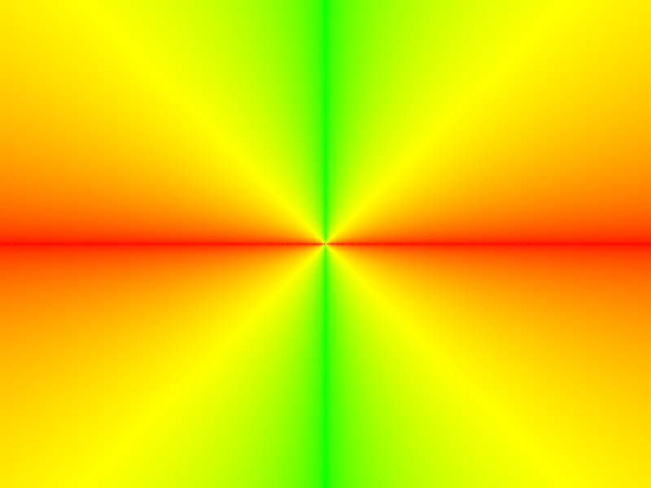
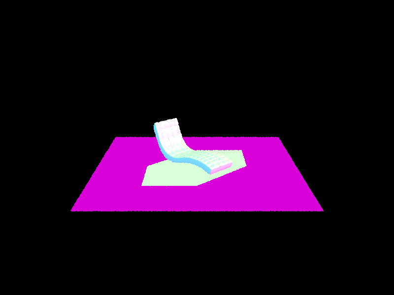

Part 1: Ray Generation and Intersection
Task 1: Generate camera ray
Task 2: Sample pixels
|

|

|
Task 3: Triangle Intersection

|
Task 4: Sphere Intersection

|
Part 2: Bounding Volume Hierarchy
Task 0: Timing Experiment
Sau khi chạy ví dụ dưới, thời gian để render đo được là 66.3938 giây
./pathtracer -t 8 -r 800 600 -f cow.png ../dae/meshedit/cow.dae
Thời gian chạy là hơn 1 phút, hình ảnh render được như hình dưới
|
|
Task 1: Constructing the BVH
Task này thực hiện xây dựng cây BVH từ tập primitives cho sẵn
Em sẽ tạo ra 1 bounding box từ các centroid của các primitives, gọi là centroidBox
Điểm em sẽ chọn làm điểm chia sẽ là centroid của centroidBox
Làm như vậy em sẽ đảm bảo được không có trường hợp nào, khi chia tập mà một trong 2 vector lại rỗng
|
|
|
|
Khi thực hiện split thì em sẽ thay đổi vị trí các phần tử dựa trên vector primitives có sẵn và đệ quy xuống dưới để xây dựng tiếp 2 nút con
Task 2: Intersecting the Bounding Box
Phần này thì không có gì nhiều, chỉ cần chú ý check đủ các điều kiện của t0 và t1
Task 3: Intersecting the BVH
Ở đây, ta sẽ sử dụng cây BVH đã xây dựng ở Task 1 để tính toán
Đầu tiên ta sẽ check với bounding box ở nút hiện tại
Sau đó, Nếu đó là nút lá, thì ta sẽ duyệt qua các primitives để tính toán
Nếu không thì ta sẽ đệ quy tính toán ở hai nút con
|
|
Kết quả thu được, thời gian chạy giảm xuống còn 0.2543 giây và hình ảnh thu được không thay đổi
Dưới đây là một số hình khác, thời gian chạy cũng đều dưới 1 giây
|
|
|
|
|

|